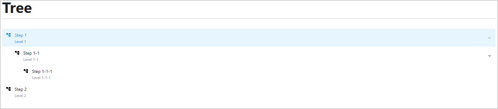
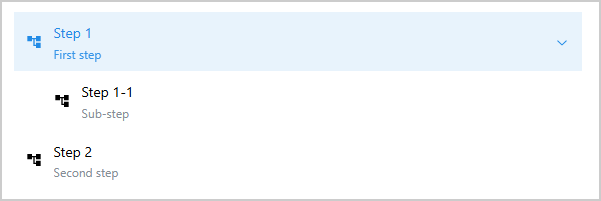
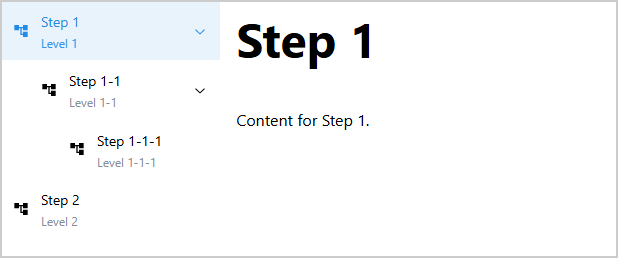
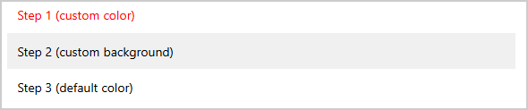

Tree#
Tree is a Dash All-in-One (AIO) component for creating a navigation sidebar in a Dash
application. Based on the NavLink component from the Dash Mantine Components library, it
provides a hierarchical tree structure for page navigation, or displaying and navigating general
tree-like data (for example, filesystem hierarchies).
Key features:
Hierarchical navigation: Supports multi-level tree structures with parent-child relationships.
Node customization: Expandable and collapsible nodes, disabled nodes, icons, and descriptions.
Callback integration: The selected item is accessible via a component ID for implementing page routing.
Offline support: Local icon support using the assets folder or base64 images.

Usage#
Configure the Dash application#
To display icons, Tree relies on package assets served by Dash Super Components. Refer to
the Register component assets and add external scripts section of the Getting Started guide for instructions on
registering the assets. Specifically, you must call
add_super_components_assets() to register the Flask
endpoint that serves the assets.
Basic usage#
Import Tree:
from ansys.solutions.dash_super_components import Tree, add_super_components_assets
from ansys.solutions.dash_super_components.utils.svg_icons import IconNames, create_base64_svg_src
Note
The create_base64_svg_src() utility produces offline-compatible icons. For information
about the available icon options and their advantages, see Icons.
Define a simple two-level tree structure and add the Tree component to the layout:
tree_items = [
{
"id": "step_1",
"text": "Step 1",
"icon": create_base64_svg_src(IconNames.MATERIAL_TREE),
"expanded": True,
"description": "First step",
"children": [
{
"id": "step_11",
"text": "Step 1-1",
"icon": create_base64_svg_src(IconNames.MATERIAL_TREE),
"description": "Sub-step",
},
],
},
{
"id": "step_2",
"text": "Step 2",
"icon": create_base64_svg_src(IconNames.MATERIAL_TREE),
"description": "Second step",
},
]
layout = html.Div(
[
html.Div(id="selected-item"),
Tree(
items=tree_items,
aio_id="navigation_tree",
selected_item="step_1",
),
]
)
The following output is expected:

Access the selected item in callbacks#
To access the currently selected item in a callback, use the Tree.ids.selected_item(aio_id)
component ID as an input. The value of this store is a dictionary containing the key "index",
which corresponds to the id of the selected tree item.
@callback(
Output("selected-item", "children"),
Input(Tree.ids.selected_item("navigation_tree"), "data"),
prevent_initial_call=True,
)
def display_selected(value):
"""Display the selected item."""
return f"Selected: {value['index']}"
When item Step 1-1 is selected, the expected output is:
Selected: step_11
Advanced usage#
The following example shows how to integrate Tree as a multi-page navigation sidebar.
The tree is defined once in the page.py module (note that the layout needs to be wrapped in
a MantineProvider). The page content is then driven by a callback that listens to both the URL
and the selected tree item, and updates the page content accordingly:
from dash.exceptions import PreventUpdate
from dash_extensions.enrich import (
DashProxy,
Input,
Output,
callback,
callback_context,
dcc,
html,
)
import dash_mantine_components as dmc
from ansys.solutions.dash_super_components import Tree, add_super_components_assets
from ansys.solutions.dash_super_components.utils.svg_icons import IconNames, create_base64_svg_src
tree_items = [
{
"id": "step_1",
"text": "Step 1",
"expanded": True,
"disabled": False,
"description": "Level 1",
"children": [
{
"id": "step_11",
"text": "Step 1-1",
"expanded": True,
"disabled": False,
"description": "Level 1-1",
"children": [
{
"id": "step_111",
"text": "Step 1-1-1",
"expanded": True,
"disabled": False,
"description": "Level 1-1-1",
},
],
},
],
},
{
"id": "step_2",
"text": "Step 2",
"expanded": True,
"disabled": False,
"description": "Level 2",
},
]
layout = dmc.MantineProvider(
[
html.Div(
[
dcc.Location(id="url", refresh=False),
dmc.Grid(
[
dmc.GridCol(
Tree(
items=tree_items,
aio_id="navigation_tree",
selected_item="step_1",
default_icon=create_base64_svg_src(IconNames.MATERIAL_TREE),
),
span=2,
),
dmc.GridCol(
html.Div(
id="page-content",
style={"paddingRight": "0.7%"},
),
span=10,
),
],
),
],
),
],
)
@callback(
Output("page-content", "children"),
Input("url", "pathname"),
Input(Tree.ids.selected_item("navigation_tree"), "data"),
prevent_initial_call=True,
)
def display_page(pathname, selected_item):
"""Display page content."""
triggered_id = callback_context.triggered_id
if triggered_id == "url" or not selected_item:
return Step1Page.layout()
elif triggered_id == Tree.ids.selected_item("navigation_tree"):
page_id = Tree.ids.get_index_from_navlink_item_id(selected_item)
if page_id == "step_1":
return Step1Page.layout()
elif page_id == "step_11":
return Step11Page.layout()
elif page_id == "step_111":
return Step111Page.layout()
elif page_id == "step_2":
return Step2Page.layout()
else:
raise ValueError(f"Unknown page selection: {page_id}")
raise PreventUpdate
The resulting page layout is as follows (with the tree navigation on the left and the page content on the right):

Styling#
Each tree item accepts an optional styles dictionary that is forwarded directly to the
underlying dmc.NavLink component. This allows fine-grained control over the appearance of
individual tree nodes.
tree_items_styled = [
{"id": "step_1", "text": "Step 1 (custom color)", "styles": {"label": {"color": "#ff0000"}}},
{
"id": "step_2",
"text": "Step 2 (custom background)",
"styles": {"root": {"backgroundColor": "#f0f0f0"}},
},
{
"id": "step_3",
"text": "Step 3 (default color)",
# no styles key: label color falls back to var(--mantine-color-text)
},
]
layout_tree_styled = html.Div(Tree(items=tree_items_styled, aio_id="styled_tree"))
The following output is expected:

Note
It is important to note that controlling styles manually can interfere with the automatic light/dark mode adaptation mechanisms of the Mantine framework, as well as highlighting of the selected item and when hovering over items.
Note
Styles are applied per item and are not inherited by children. Each child node
must define its own styles dictionary if custom styling is required.
Icons#
Each tree item can display an icon to the left of its label. The primary item-level property is
icon, and the constructor exposes default_icon as a fallback.
If an item defines icon, that value is used. Otherwise, default_icon is used when
provided. If neither icon nor default_icon is provided, no icon is rendered for that
item.
Icon types#
Icon values can be local image values (a path relative to the application’s assets folder or
a base64-encoded image string, for example produced by create_base64_svg_src()) or an icon
name from the Iconify online icon service (for
example, "material-symbols:folder").
By default, the icon rendering mode is inferred automatically from the resolved icon value. You can
override this behavior per item via icon_type:
"auto"(default): infer whether to render as local image or Iconify icon."local": render with a local CSS-mask icon. Use for local image values only (assets paths or base64 data URI values)."iconify": render withDashIconify. Use for Iconify icon names and internet-connected deployments.
The following example demonstrates the three icon rendering modes:
tree_items_icon_type = [
{
"id": "icon_type_no_type_specified",
"text": "No icon type specified",
"icon": create_base64_svg_src(IconNames.MATERIAL_WARNING),
"description": "Icon type is automatically determined based on the icon value",
},
{
"id": "icon_type_local",
"text": "Forced local mode",
"icon": create_base64_svg_src(IconNames.MATERIAL_WARNING),
"icon_type": "local",
"description": "Explicitly rendered as CSS-mask icon span",
},
{
"id": "icon_type_iconify",
"text": "Forced iconify mode",
"icon": "material-symbols:warning",
"icon_type": "iconify",
"description": "Explicitly rendered via DashIconify",
},
{
"id": "icon_type_auto",
"text": "Auto icon type explicitly set",
"icon": "material-symbols:warning",
"icon_type": "auto",
"description": "Icon type is automatically determined based on the icon value",
},
]
Note
Local icons must be given as strings that are either a path relative to the application’s
assets folder or a base64-encoded image string. Dash HTML elements are not supported as
icon values.
Dark mode behavior and icon color handling#
Tree icons use currentColor by default, so they follow the active state and the current
color scheme automatically. To override icon color per item, set icon_color in the item
definition.
The following example demonstrates the behavior of the icon color handling strategies for light and dark mode:
tree_items_dark_mode_options = [
# Automatic adaptation: one icon for both themes with base64-encoded SVG
{
"id": "home",
"text": "Local icon",
"icon": create_base64_svg_src(IconNames.MATERIAL_HOME),
},
# Automatic adaptation: one icon for both themes with Iconify icon name
{
"id": "warning",
"text": "Iconify icon",
"icon": "material-symbols:warning",
},
# Iconify icon with explicit icon color.
{
"id": "success",
"text": "Iconify icon with explicit icon_color",
"icon": "material-symbols:check-circle",
"icon_color": "var(--mantine-color-green-6)",
},
# Local icon with icon_color override for light and dark mode.
{
"id": "logo",
"text": "Local icon with explicit icon_colors for light and dark mode",
"icon": create_base64_svg_src(IconNames.MATERIAL_TREE),
"icon_color": "light-dark(var(--mantine-color-blue-8), var(--mantine-color-blue-2))",
},
]
layout_tree_dark_mode_options = html.Div(
Tree(
items=tree_items_dark_mode_options,
aio_id="tree_dark_mode_options",
)
)
The following output is expected:
Properties#
Tree structure definition#
Key |
Description |
Type |
Required |
|---|---|---|---|
id |
The unique identifier of the item. |
string |
Yes |
text |
The text displayed in the item. |
string |
Yes |
icon |
The icon value displayed for the item. Supports
local image values (for example, |
string |
No |
|
Optional CSS color for the item icon. If omitted,
the icon inherits |
string |
No |
|
Explicit icon rendering mode: |
string |
No |
expanded |
Controlled nested items collapse state.
Sets the initial open/closed state on load.
Default: |
boolean |
No |
disabled |
Turn off item selection.
Default: |
boolean |
No |
description |
The item description added below the text.
Default: |
string |
No |
styles |
A dictionary of styles applied to the NavLink
sub-components (for example, |
dict |
No |
children |
The list of children of the item. If not provided, the item is considered a leaf node without children. |
list |
No |
Constructor parameters#
Key |
Description |
Type |
Required |
|---|---|---|---|
items |
A list of dictionaries representing the tree structure. |
list |
Yes |
selected_item |
The unique id of the initially selected tree item.
Default: |
string |
No |
default_icon |
The default icon value displayed for tree items when
|
string |
No |
aio_id |
The unique identifier for the component. If not provided, a UUID is generated. |
string |
No |
Component IDs#
The component exposes the following IDs for use in callbacks:
Tree.ids.selected_item(aio_id): Store containing the currently selected item data (dict with"index"key matching the selected item’sid). Can also be used as an output of a callback to programmatically set the selected item.Tree.ids.navlink_item(aio_id, index): Individual navigation link items (useALLwildcard for theindexto match all items)
Warning
Tree.ids.navlink_item(aio_id, index) is supported for controlling component properties such as
disabled, but it must not be used with n_clicks to detect click events.
To detect selection changes, always use Tree.ids.selected_item(aio_id).
Limitations#
Iconify-based icons require internet access. For offline deployments, use local image values (assets paths or base64 data URI values).
Tree icons require
add_super_components_assets()to be called in order for the icons to be displayed. See Register component assets and add external scripts.
Full example#
Check out this example
to learn how to use Tree as a standalone component.
The example demonstrates:
A minimal tree using only the required item properties (
idandtext)A full-featured tree using online Iconify icons (internet required), descriptions, mixed expanded and collapsed state, a disabled item, a preselected item, and a button callback that jumps the selection to a certain tree item. The selected item is persisted on the backend and restored on page reload.
A styled tree using offline-compatible
create_base64_svg_src()icons with item-levelstylesandicon_colorfor coloring node labels and iconsA tree demonstrating explicit
icon_typeoverrides ("local"and"iconify") and an item rendered without any iconA workflow tree where nodes can be disabled and re-enabled via callbacks, with three scenarios: disabling a single node, a downstream range of nodes, and the entire tree
A callback per tree displaying the currently selected item
For a complete example of Tree used as a navigation sidebar for a multi-page application,
see the showcase application page.py.
This file shows how Tree drives page routing across all component pages of the showcase
application.
For a minimal self-contained runnable example, see the Tree page in the Examples gallery.
Source code#
For the full API reference of Tree, see
Tree.
Check out the component source code to discover the underlying logic. Contributions are welcomed. You can extend the component functionalities by raising a pull request in the super-components-for-dash repository.